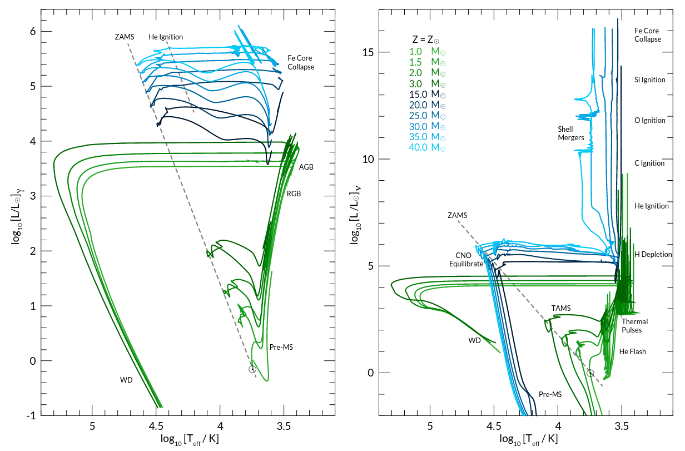
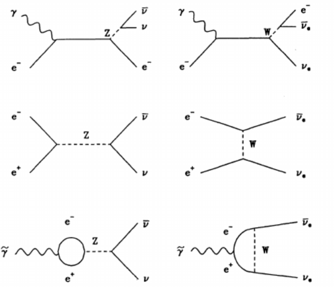
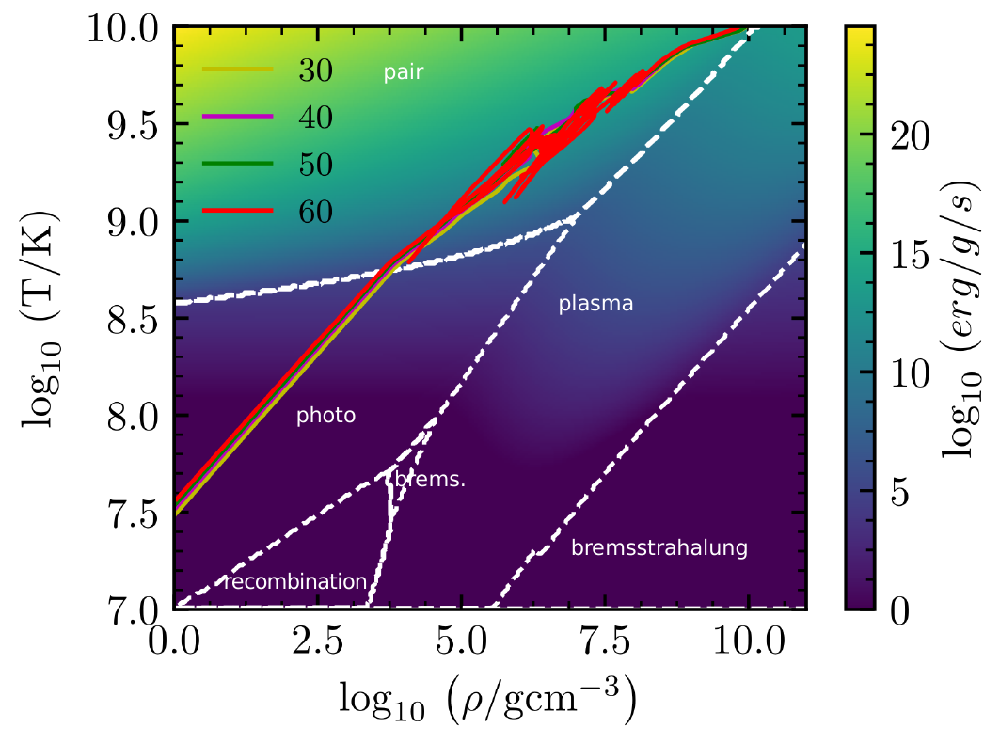

Materials: Onno Pols' notes Sec. 6.5 and 12.3.1, Chapter 7, Kippenhahn chapter 9, 10, 11.
Neutrino physics in stars
We have almost seen all the pieces needed to make a one-dimensional hydrostatic model of a star, including the input physics in the quantities κ (opacity) and εnuc. The aim of this lecture is to unpack the last input quantities entering in the energy conservation which connects stellar physics with neutrino physics: εν.
Summary of equations we have derived
Mass conservation
Hydrostatic equilibrium
which follows from the momentum conservation equation assuming the acceleration to be negligible N.B.: this last assumption could be relaxed to add an extra term in this equation analogous to \(ma\) in \(F=ma=md^2r/dt^2\).
Equation of state
Energy transport
where ∇ =∂ log(T)/∂ log(P) is the local temperature gradient, equal to the radiative gradient in stably stratified regions:
with κ = (1/κrad + 1/κcond)-1 the combination "in parallel" of the radiative and conductive opacity (assumed to be known from atomic physics), and ∇ ≡ ∇ad the adiabatic gradient (within ∼10-7-8 precision) for convective regions. We also have criteria to determine which region is which.
Energy conservation
with εgrav = T∂ s/∂ t the change in internal energy and εν>0 (⇒ it is always a loss term during stellar evolution).
Composition evolution
determined by the combined effect of thermonuclear burning and mixing, where in the third equation, the first two terms represent production and destruction of the i-th isotope by nuclear processes and the third term represent mixing by various instabilities treated in diffusion approximation.
Two types of neutrinos
For the density typical in stellar interior (think of ⟨ρ☉⟩ and the other average densities you estimated in the various homeworks), neutrinos can safely be considered as non-interacting. This means we can consider neutrinos as ultra-relativistic mass-less particles propagating at v ≅ c. The mass less approximation also implies that we neglect neutrino oscillations: even if a neutrino changes leptonic flavor, it's still going to leave the star carrying away its energy!
N.B.: recall that the leptonic number is 1 for the leptons electron
e-, muon μ-, tau τ- and the corresponding neutrinos νe, νμ,
ντ and -1 for their antiparticles positron e^{} positive muon μ+,
and positive τ+ and the corresponding antineutrinos.
Therefore, any neutrino produced in the stellar interior leaves the star in the light-crossing time R/c ≤ 1000 R☉/c ≅ 1000 × 2 sec = 2000 sec which is much shorter than evolutionary timescales (and even during shorter evolutionary phases such as silicon shell burning, the energy carried by the neutrinos is on its way out and nothing is going to stop it from leaving the star).
These arguments apply to both kinds of neutrinos that we encounter in stellar evolution (and are about to introduce), and stop working only when densities get extremely high (ρ≥1010 g cm-3): at this point neutrinos can and do start interacting with matter. Such densities are only encountered in a collapsing core that has exhausted nuclear fuel and in neutron stars: neutrino interactions are crucial to the physics of the supernova explosions, but can safely be neglected before.
During the evolution of the star that sets the stage for the explosion, we encounter two "classes" of neutrinos.
Nuclear neutrinos
We have already encountered processes producing neutrinos occurring in stars: weak nuclear reactions! These are needed since the main sequence (both in the pp chain and CNO) to convert some protons into neutrons for the helium nuclei. On the scale of rnuc, the neutrino crossing time (that is the light crossing time) is so short that we can neglect neutrino oscillations and assume conservation of leptonic number (for each flavor, but a star will make mostly electron-flavor leptons, since muons and \(\tau\) leptons are short lived) to write down the reactions and conservation equations.
These neutrinos do carry away energy as described above, but that is just some of the energy that the exo-energetic thermonuclear reaction would have released. Effectively, they decrease the energy gain from releasing nuclear binding energy but they are not a net energy loss.
This allows to incorporate them in models by re-writing εnuc → εnuc - |εν, nuc|, where the neutrino term is always negative (hence we can write it as minus an absolute value), and needs to be calculated from nuclear physics, determining the spectrum of the neutrino produced by a given reaction (a non-trivial task which stellar physics leaves to neutrinos and nuclear physicists).
N.B.: The nuclear energy scale is 1-10 MeV, we expect nuclear neutrinos energy to be of this order of magnitude too!
Particularly important for the late evolution of massive stars are neutrinos from the so-called URCA processes (named after a casino in Rio de Janeiro because when these processes kick in the energy of the nuclear reaction goes the same way as the money in the casino!):
which produce one neutrino and one anti-neutrino without changing the composition of the star because of an electron capture followed by a β+ decay. This requires that the nucleus \(^{A}(Z-1)\) is unstable to β--decay and the cross section for electron capture on \(^AZ\) is non-negligible, which can happen at very high \(\rho\) encountered in degenerate WDs, during Si core burning, and the subsequent gravitational collapse of the core once the nuclear fuel runs out.
The nuclear neutrinos are mostly sensitive to the core temperature for the activation of certain thermonuclear reaction chains (except for pycno-nuclear reaction at extremely high densities where the electron screening effectively makes the Coulomb barrier negligible, see for example Caplan 2020).
Thermal neutrinos
After the end of helium core burning, the density in the stellar cores become sufficiently high (because of the gravothermal collapse) that non-nuclear processes producing neutrinos start occurring. After carbon depletion, the neutrinos produced by these processes can take away more energy than is locally lost to photons by each stellar layer: evolved massive stars are neutrino stars Lν ≫ Lrad (Fraley 1968).

This also effectively means that the stellar core of evolved (∼ during and after carbon core burning) massive stars is decoupled from the stellar envelope: the gravothermal collapse of the core occurs to compensate the neutrino losses from the core itself! The thermal timescale of the core becomes τKH,ν≅ GMcore2/(2Rcore Lν) and the nuclear timescale becomes τnuc,ν = φ fburn Mc2/Lν both of which are much shorter than the timescales in the low density, photon-cooled envelope: in the late stages of stellar evolution the envelope should be frozen and the core evolves driven by neutrino losses.
N.B.: it is still the energy losses driving the gravothermal collapse because of the virial theorem that govern the evolution, but the envelope does not have time to keep up with the core.
N.B.: recently, observations of early signals of stellar explosion have questioned this picture of frozen envelope: there may be some presently unknown phenomena happening on a dynamical timescale of the envelope in the final years/months of a massive star evolution that affect the envelope. The fact that they need to be dynamical to do anything is related to the fact that the evolution of the core is sped up by the thermal neutrino losses.
The neutrinos that do not come from nuclear reactions are a real energy loss term for the star that enter in the local energy conservation equation εν (which is also always negative!): dL/dm = εnuc - |εν| +εgrav.
The thermal processes producing these neutrinos typically will produce a neutrino-antineutrino pair to conserve the leptonic number. Typically only electron neutrinos will be relevant: leptons other than e± are unstable and are not commonly found in stars. They fall into several categories (here x={e, μ, or τ} but in stellar conditions it's typically e):
- plasmon processes: \(\gamma + \tilde{\gamma} \rightarrow \nu_x + \bar{\nu}_x\),
- bremsstrahlung: \(e^{-} + ^{A}Z \rightarrow e^{-} + ^{A}Z + \nu_x + \bar{\nu}_x\),
- pair-production: \(\gamma + \gamma \rightarrow \nu_x + \bar{\nu}_x\),
- pair annihilation: \(e^{+}+e^{-} \rightarrow \nu_x + \bar{\nu}_x\) ,
- photo-processes: \(\gamma +e^{-} \rightarrow e^{-} + \nu_x + \bar{\nu}_x\),

N.B.: "plasmons" are collective excitations of the stellar plasma that propagate (the analogy is with "solitons" in fluid dynamics), and can be quantized and coupled via quantum electrodynamics to e±.
N.B.: Feynman diagrams are not physically accurate representation of the process itself, rather they are a visual representation of the terms in the integrals to calculate transition amplitudes: the virtual particles (or mediators) with no "free legs" that "appear" and "disappear" may not respect the mass-shell and do not necessarily represent physical intermediate steps in a process. Do not over-interpret these diagrams as physical pictures!
Neutrino cooling processes are mostly sensitive to the core density ρ. The typical energy carried away per neutrino-antineutrino pair is of the order of the thermal energy of the electrons (i.e.,\(\sim k_{B}T\) or their Fermi energy if the region from where the neutrinos are emitted is partially degenerate). Thus, typically thermal neutrinos will have lower energies than the nuclear neutrinos.
Like κ and εnuc, the energy losses to thermal neutrinos are usually tabulated in stellar physics codes (see especially the widely used Itoh et al. 1996), and the figure below shows the |εν| ≡ |εν|(T,ρ) resulting from these tables:

Homework
- estimate the typical energy of thermal and nuclear neutrinos